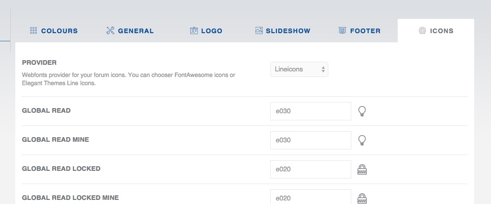
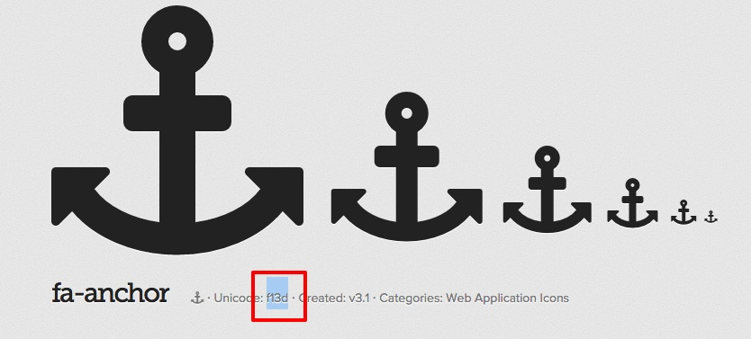
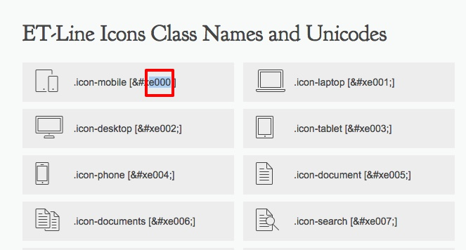

This is also very important part of your forum configuration. You can specify custom icons for almost every topic state. You can also choose two providers. FontAwesome and ElegantThemes Line Icons.

First you have to decide if you want to use FontAwesome or ET Line Icons. In both cases you will have to copy unicode symbol which will then be used to identify specified icon.
FontAwesome icons are available here: http://fortawesome.github.io/Font-Awesome/icons/. Find your preferred icon, click on it, and copy Unicode like described below.

Then paste it into desired icon text field in Devlom Configurator, use "Submit" button at the bottom to save your settings and you're done !
LineIcons icons are available here: http://www.elegantthemes.com/blog/resources/how-to-use-and-embed-an-icon-font-on-your-website. Scroll down to the middle of the page, where icons and icon classes are listed and copy Unicode like described below.

Then paste it into desired icon text field in Devlom Configurator, use "Submit" button at the bottom to save your settings and you're done !
We have to use Unicodes due to phpBB 3.1 limitations. This method provides more compatibility with prosilver codebase.